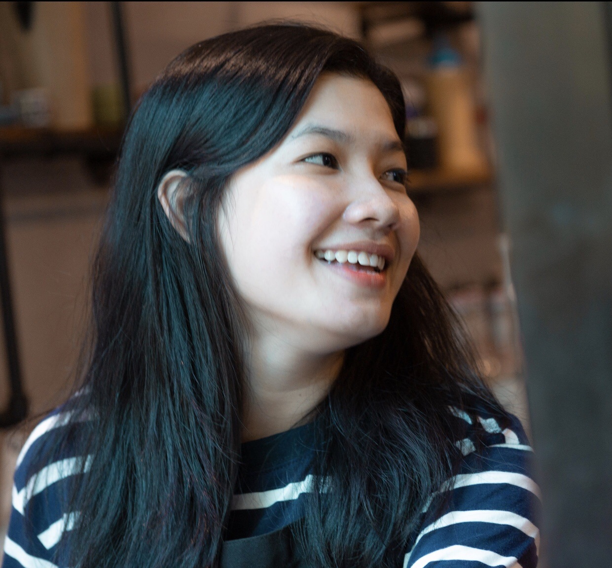
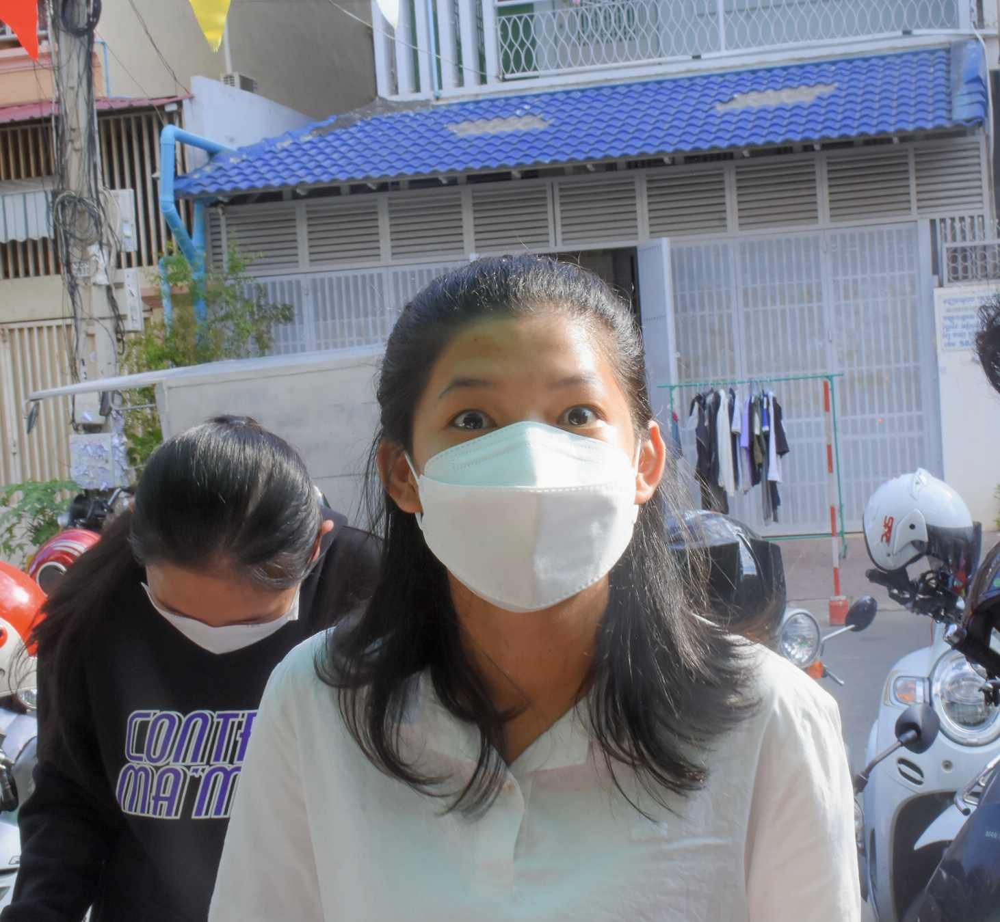

Passionate
I was born and raised in a small town in Cambodia, and my long experience growing up in a place where technology was limited pushed me to pursue computer science. I began my coding journey when I was in the 11th grade. After a deeper understanding of technology, I became really passionate about computer science. I moved from Kampot to Phnom Penh, which completely changed my life. When people ask about my plans, I always say, "I want to use technology to change the world."

